PERMASALAHAN DI SEKITARKU
Ketika Ekosistem Daratan Mulai Terancam
Permasalahan SDGs 15 berkaitan dengan ekosistem daratan yang meliputi perlindungan hutan, satwa, keanekaragaman hayati, dan kualitas tanah. Saat ini, kondisi ekosistem daratan masih belum terjaga dengan baik, terutama di Indonesia.
Hal ini dapat disebabkan oleh pembangunan serta kurangnya upaya penghijauan dan pelestarian lingkungan. Padahal, pepohonan dan tumbuhan memiliki peran penting dalam menjaga keseimbangan ekosistem dan kualitas lingkungan kita.
Lihat lebih lanjut ↓
Life on Land
LOKASI PERMASALAHAN
Kerusakan ekosistem daratan dapat ditemukan di berbagai wilayah Indonesia, baik di lingkungan perkotaan maupun kawasan yang memiliki banyak hutan.
Lingkungan Perkotaan
Di sekitar tempat tinggal dan lingkungan masyarakat, pembangunan yang berlangsung secara terus-menerus dapat mengurangi lahan hijau dan jumlah pepohonan.
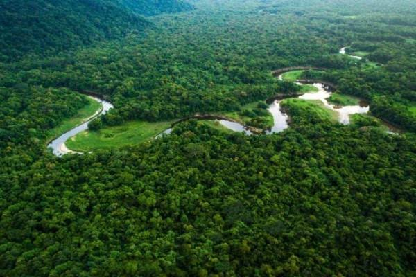
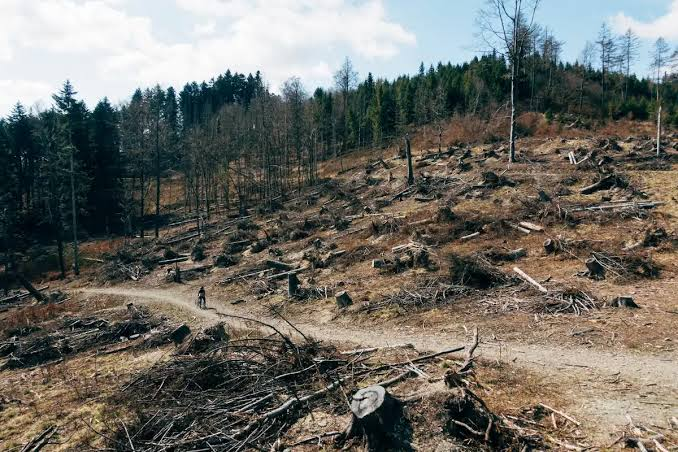
Kawasan Hutan
Penebangan dan pembakaran hutan dapat merusak ekosistem serta mengancam habitat berbagai satwa.
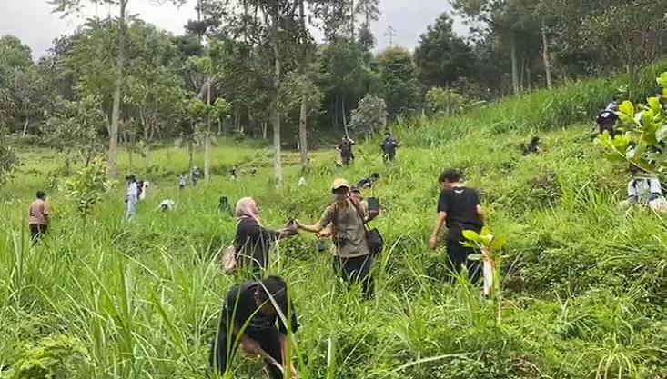
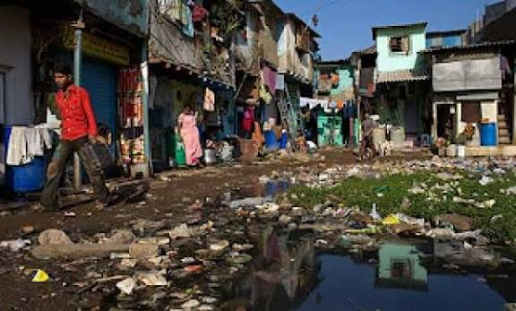
Lingkungan Masyarakat
Kurangnya penghijauan dan pelestarian membuat lingkungan sekitar semakin kehilangan ruang hijau.
PENYEBAB KERUSAKAN
Beberapa faktor yang menyebabkan ekosistem daratan mengalami kerusakan.
01
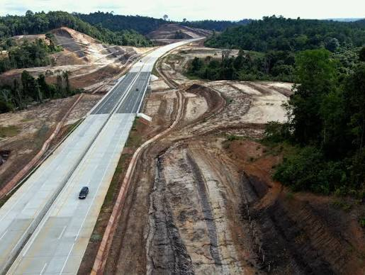
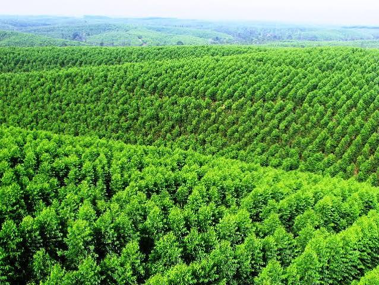
Pembangunan
Perluasan kawasan industri dan perumahan.
+


Pembangunan industri, perumahan, dan fasilitas lainnya membutuhkan lahan yang dapat mengurangi area hijau serta mengubah kondisi lingkungan alami.
02
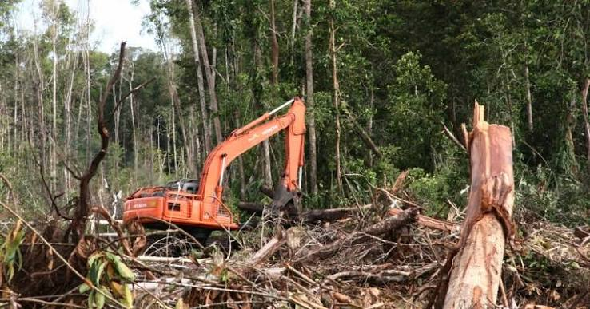
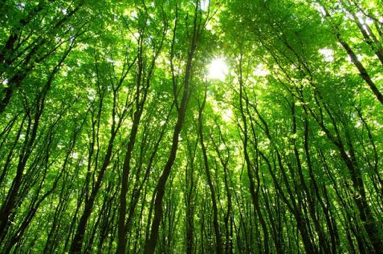
Penebangan Pohon
Berkurangnya jumlah pohon dan kawasan hutan.
+


Penebangan pohon secara berlebihan dapat mengurangi kawasan hijau dan membuat berbagai satwa kehilangan tempat tinggal alaminya.
03
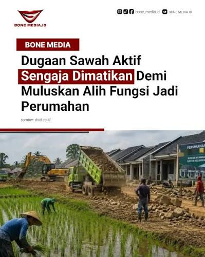
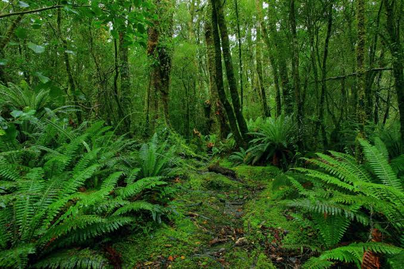
Fungsi Lahan
Perubahan lahan untuk pertanian dan perkebunan.
+


Penggunaan lahan untuk pertanian, perkebunan, dan kebutuhan lainnya dapat mengurangi area yang sebelumnya menjadi bagian dari ekosistem alami.
04
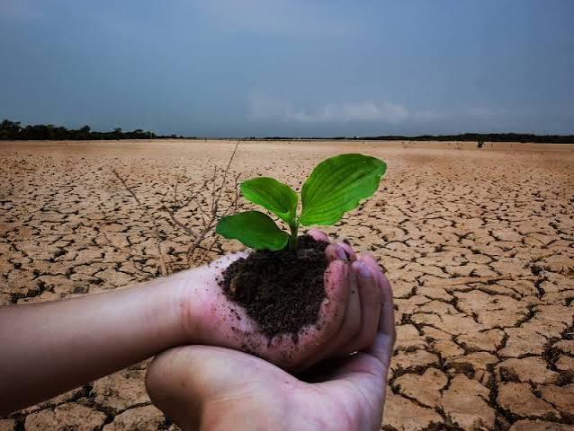
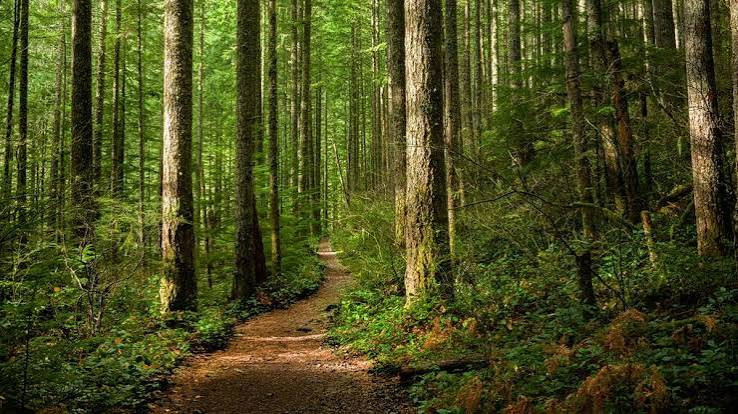
Kurangnya Penghijauan
Penanaman dan pemeliharaan pohon belum maksimal.
+


Upaya penanaman dan pemeliharaan pohon terkadang belum dilakukan secara maksimal sehingga lahan yang kehilangan vegetasi tidak segera dipulihkan.
05
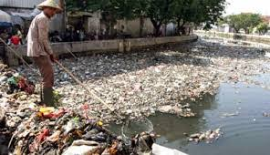
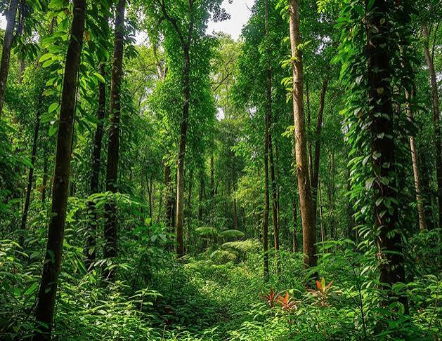
Kurangnya Kesadaran
Kesadaran masyarakat terhadap lingkungan masih perlu ditingkatkan.
+


Kurangnya pemahaman tentang pentingnya menjaga lingkungan dapat membuat masyarakat kurang memperhatikan kelestarian alam di sekitarnya.
ORANG YANG TERDAMPAK DAN DAMPAKNYA
Kerusakan ekosistem daratan tidak hanya memengaruhi alam, tetapi juga kehidupan manusia dan berbagai jenis satwa.
Semua Makhluk Hidup Saling Terhubung.
Berkurangnya pepohonan dan rusaknya habitat dapat menimbulkan dampak yang saling berkaitan. Jika ekosistem tidak terjaga, keseimbangan lingkungan dan kehidupan di dalamnya juga dapat terganggu.
Manusia
Penurunan kualitas udara dan berkurangnya kemampuan lingkungan dalam menyerap air hujan dapat memengaruhi kehidupan masyarakat.
Hewan/Tanaman
Berkurangnya kawasan hutan dan habitat alami dapat membuat berbagai jenis satwa kehilangan tempat tinggalnya.
Lingkungan
Kerusakan ekosistem dapat mengganggu keseimbangan alam dan mengurangi keanekaragaman hayati.